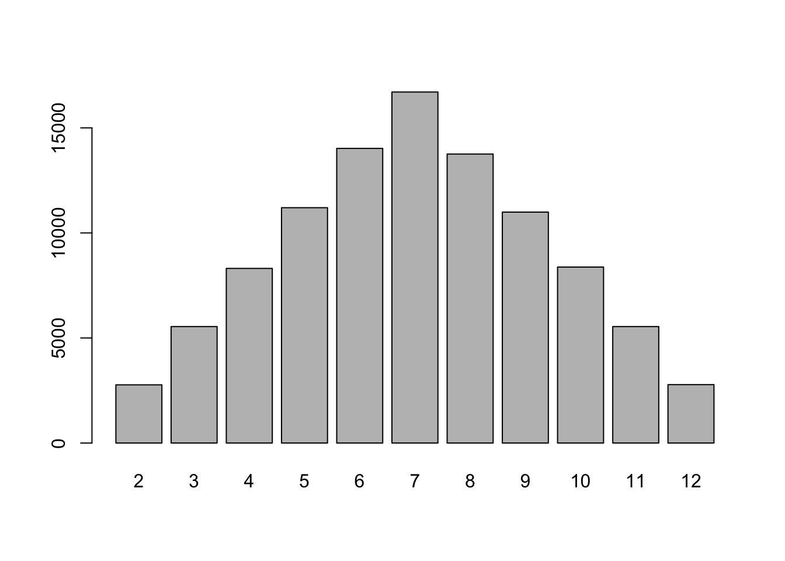
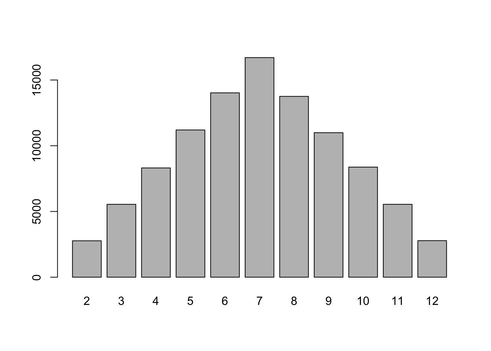
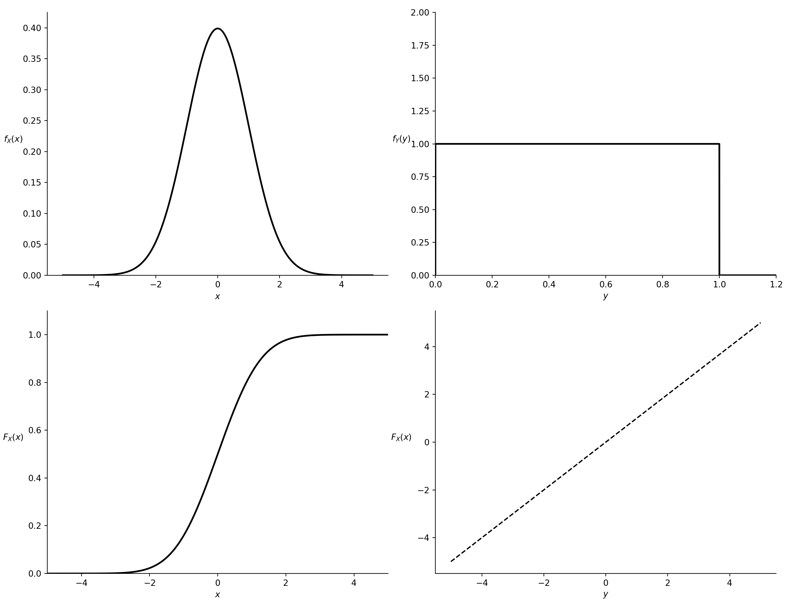

num.dices <- 2L
num.rolls <- 100000L
outcomes <- matrix(sample(1:6, num.dices * num.rolls, replace = TRUE),
nrow = num.rolls, ncol = num.dices)
sums <- rowSums(outcomes)
barplot(table(sums))
單一特徵值的隨機性描述。
隨機變數可以看做是一個映射(mapping)，例如擲硬幣、擲骰子，我們都能夠利用隨機變量將其話化作數學的形式，從而能夠了解其背後的一些性質。
考慮一個從原始樣本空間 \(S\) 到一個包含一組實數的新樣本空間 \(\Omega\) 的映射 \(X\)，這個映射 \(X: S \to \Omega\) 就被稱為一個隨機變量(random variable)。因此隨機變數雖然稱之為「變數」，但其本質上為一個映射函數。
\(\textbf{Definition 2.1}:\) A random variable, \(X(\cdot)\), is a \(\mathcal{F}\)-measurable mapping mapping from the sample space \(S\) to the real line \(\mathbb{R}\) such that for each outcome \(s \in S\), there exists a corresponding unique real number, \(X(s)\). The collection of all possible values that the random variable \(X\) can take, also called the range of \(X(\cdot)\), constitutes a new sample space, denoted as \(\Omega\).
Note that \(X: S \to \Omega\) need not to be a 1-1 mapping.
我們可以重新考慮丟硬幣的例子。已知樣本空間為 \(S = \{H, T\}\)，我們定義一個隨機變數 \(X\)： \[ X = \begin{cases} 1, \quad H\\ 0, \quad T \end{cases} \] 則我們可以獲得新的樣本空間 \(\Omega = \{0, 1\}\)。下面的例子可以加深我們理解隨機變量存在的意義。考慮三個公正骰子，我們每次同時丟下三個骰子後記錄下其為正面、反面的個數，可以得到樣本空間應為 \[ S = \{TTT,TTH, THT, HT, H HT, HTH, THH, HHH\} \] 令 \(X(\cdot)\) 代表正面朝上個數的隨機變數，則 \[ \begin{aligned} &X(TTT) = 0,\\ &X(TTH), X(THT), X(HTT) = 1\\ &X(HHT), X(HTH), X(THH) = 2\\ &X(HHH) = 3 \end{aligned} \]
在上述例子中，\(X(s)\) 代表正面朝上的個數，而 \(\mathbb{P}(X = 3) = \mathbb{A}\)，其中 \[ A = \{s \in S: X(s) = 3\} = \{HHH\} \] 其表示了三個正面同時朝上的機率。
我們也可以利用隨機變數將連續的樣本空間轉換為離散的。假設 \(S = \{s: -\infty < s < \infty\}\)，令隨機變數 \(X\) 如下： \[ X(s) = \begin{cases} 0, \quad \text{if }s \leq 0\\ 1, \quad s > 0 \end{cases} \]
在統計學中，我們稱上述的隨機變數為二元隨機變數(binary random variable)，因為 \(X\) 只有兩個可能的值。二元隨機變數在經濟學的應用很廣泛，其中一個最常見的例子為勞動經濟學中針對男性與女性薪資差異之研究，我們可以令一個隨機變數 \(\operatorname{gender}\) 代表性別，根據蒐集到的資料，\(\operatorname{gender}\) 定義為 \[ \operatorname{gender} = \begin{cases} 0, \quad \text{male}\\ 1, \quad \text{female} \end{cases} \]
事實上隨機變數的應用不僅止於這些，我們針對經濟學領域提出一些例子，如個體主觀的效用、投資者信心、經濟政策不確定性
針對樣本空間 \(S\)，我們已經定義了三位一體可測空間 \((S, \mathcal{F}, \mathbb{P})\)。假設樣本空間 \(S\) 中存在有限數量的出象(finite basic outcome)，即 \[ S = \{s_{1}, \cdots, s_{n}\} \]
且有機率函數 \[ \mathbb{P}: \mathcal{F} \to [0, 1] \]
其中 \(\mathcal{F}\) 為建立在 \(S\) 上的 \(\sigma\)-field。而我們已經知道隨機變數 \(X:S \to \mathbb{R}\) 可以得到新的樣本空間 \(\Omega\)，其中 \[ \Omega = \{x_{1}, \cdots, x_{m}\} \]
注意到 \(m\) 不一定要與 \(n\) 相同。那麼問題來了，我們是否要針對新的樣本空間 \(\Omega\) 重新定義可測空間呢？答案是不用。因為我們只要利用隨機變數映射過去，即可產生新的可測空間，我們寫作 \((\Omega, \mathcal{F}_{\Omega}, \mathbb{P}_{\Omega})\)。因此，針對隨機變數 \(X\) 而新定義的機率函數 \(\mathbb{P}_{X}: \Omega \to \mathbb{R}\) 可以由下面的方式求得 \[ \begin{aligned} \mathbb{P}_{X}(x_{i}) &\equiv \mathbb{P}(X = x_{i})\\ &= \mathbb{P}(C_{i}) \end{aligned} \]
其中 \(C_{i}\) 是在 \(S\) 中的一個事件，使得 \[ C_{i} = \{s \in S: X(s) = x_{i}\} \]
此時 \(\mathbb{P}_{X}\) 被稱為推導機率函數(induced probability function)，原因是因為其是從原本機率函數 \(\mathbb{P}(\cdot)\) 推導出來的，而因為以下即是針對 \(\mathbb{P}_{X}\) 進行討論，故下面若無特別說明，即稱之為機率函數。
我們可以另外針對事件進行及處理。對於任何集合 \(A \in \mathcal{F}_{\Omega}\)，我們可以定義機率函數 \(\mathbb{P}_{x}: \mathcal{F}_{\Omega} \to \mathbb{R}\)，使得 \[ \begin{aligned} \mathbb{P}_{X}(A) &= \mathbb{P}(C_{A})\\ &= \mathbb{P}\left[s \in S: X(s) \in A\right] \end{aligned} \]
其中 \(C_{A} = \{s \in S: X(s) \in A\}\)。白話來說，\(C_{A}\) 就是一個出象的集合，而這個集合讓隨機變數的值都落在集合 \(A\) 中。
注意到當 \(S\) 是連續且不可數時，我們必須保證 \(C_{A}\) 仍然落在 \(\sigma\)-field 中，也就是說有時候 \(C_{A}\) 的結果可能會跑出 \(\sigma\)-field，原因在於隨機變數 \(X\)。由於隨機變數為一個映射關係，若映射關係恰好讓結果跑出去，就無法定義三位一體。因此我們以下必須進行一些限制，而這個限制稱為可測函數，換句話說，可測函數就是保證隨機變數 \(X\) 映射後得到的集合仍然落在我們上述定義的新的可測空間，並且使得機率函數是良好定義的(well-defined)。
\(\textbf{Definition 2.2}:\) A function \(X: S \to \mathbb{R}\) is \(\mathcal{F}\)-measurable if for every real number \(a\), the set \[ \{s \in S: X(s) \leq a\} \in \mathcal{F} \]
\(\textbf{Theorem 2.1}:\) Let \(\mathcal{F}\) be a \(\sigma\)-field associated with sample space \(S\). Let \(f(\cdot)\) and \(g(\cdot)\) be \(\mathcal{F}\)-measurable real-valued functions, and \(c\) be a real number. Then the functions \(c \cdot f(\cdot)\), \(f(\cdot) + g(\cdot)\), \(f(\cdot) \cdot g(\cdot)\) and \(|f(\cdot)|\) are also \(\mathcal{F}\)-measurable.
如果函數 \(X(s)\) and \(Y(s)\) 是從 \(S\) 映射到 \(\Omega\) 上，則基本的代數運算均為 \(\mathcal{F}\)-measurable：
\(Z(s) = aX(s)\)
\(Z(s) = X(s) + Y(s)\)
\(Z(s) = X(s) \cdot Y(s)\)
\(Z(s) = X(s)/Y(s)\)
此外，給定一個可測函數的序列 \(\{X_{1}(s), X_{2}(s), \cdots\}\)，則極限運算一樣為 \(\mathcal{F}\)-measurable：
\(Z(s) = \lim_{i \to \infty}Z_{i}(s)\)
\(Z(s) = \lim_{n \to \infty} \sup_{1 \leq i \leq n}|Z_{i}(s)|\)
這些性質可以應用在漸進理論中。
有了上述關於隨機變數的轉換後，我們便可以透過 CDF 刻畫隨機變數的性質。
\(\textbf{Definition 2.2}:\) The CDF of a random variable \(X\) is defined as: \[ F_X(x) = \mathbb{P}(X \leq x), \forall x \in \mathbb{R} \]
注意到 \(F_{X}(x)\) 也可以寫成 \(F(x)。\)而 CDF 有以下的重要性質：
\(\textbf{Theorem 2.2}:\) Suppose \(F_{X}(\cdot)\) is the CDF of some random variable \(X\). Then
\(F_{X}(x)\) is monotonically increasing function, i.e., \(\lim_{x \to -\infty} F_{X}(x) = 0\), \(\lim_{x \to \infty} F_{X}(x) = 1\)
\(F_{X}(x)\) is non-decreasing, i.e., for any \(x_{1} < x{2}\), \(F_{X}(x_{1}) \leq F_{X}(x_{2})\)
\(F_{X}(x)\) is right continuous, i.e., for all \(x\) and \(\delta > 0\), \[ \lim_{\delta \to 0^{+}}\left[F_{X}(x + \delta) - F_{X}(x)\right] = 0 \]
that is, \[ F_{X}(x + \delta) \to F_{X}(x) \text{ if } \delta \downarrow 0 \]
第一個性質可以透過以下的方式理解，如果我們考慮 \(x \to -\infty\) 的情況，即 \[ F_{X}(x) = \mathbb{P}(X \leq x) = \mathbb{P}(X \leq -\infty) \]
我們所得到的集合是一個空集合，機率必為 \(0\)，原因是不可能有實數比 \(-\infty\) 還小。若我們考慮 \(x \to \infty\)，則 \[ F_{X}(x) = \mathbb{P}(X \leq x) = \mathbb{P}(X \leq \infty) \]
因為任何實數必定小於 \(\infty\)，此即一個確定事件(sure event)，機率必為 \(1\)。第二個性質的證明如下
\(\textit{Proof.}\)
Given \(x_{1} < x_{2}\), we know that \[ \{X \leq x_{2}\} = \{X \leq x_{1}\} \cup \{x_{1} < X \leq x_{2}\} \]
and \(\{X \leq x_{1}\}\) and \(\{x_{1} < X \leq x_{2}\}\) are disjoint, then we have \[ \mathbb{P}(X \leq x_{2}) = \mathbb{P}(X \leq x_{1}) + \mathbb{P}(x_{1} < X \leq x_{2}) \geq \mathbb{P}(X \leq x_{1}) \]
By definition, \(F_{X}(x_{2}) = \mathbb{P}(X \leq x_{2})\), then we obtain the desired result we would like to prove.
\(\square\)
同樣地，第三個性質的證明與第二個性質的證明相仿：
\(\textit{Proof.}\)
Given \(\delta > 0\) and \(\delta \to 0\), we know that \[ \{X \leq x + \delta\} = \{X \leq x\} \cup \{x < X \leq x + \delta\} \]
and \(\{X \leq x\}\) and \(\{x < X \leq x + \delta\}\) are disjoint, then we have \[ \mathbb{P}(X \leq x + \delta) = \mathbb{P}(X \leq x) + \mathbb{P}(x < X \leq x + \delta) \]
Note that \(\{x < X \leq x + \delta\}\) is an empty set given \(\delta \to 0\). Therefore, \[ F_{X}(x + \delta) \to F_{X}(x) \]
\(\square\)
\(\textbf{Theorem 2.3}:\) Let \(a < b\). Then \[ \mathbb{P}(a < X \leq b) = F_{X}(b) —F_{X}(a) \]
\(\textit{Proof.}\)
Observing that the event \(\{X \leq b\} = \{X \leq a\} \cup \{a < X \leq b\}\) and the events \(\{X \leq a\}\) and \(\{a < X \leq b\}\) are disjoint, we have \[ \mathbb{P}(X \leq b) = \mathbb{P}(X \leq a) + \mathbb{P}(a < X \leq b) \]
\(\square\)
\(\textbf{Theorem 2.4}:\) \[ \mathbb{P}(X > b) = 1 — F_{X}(b) \] \(\textit{Proof.}\)
The result follows immediately from \(\mathbb{P}(A^{c})＝ 1 —\mathbb{P}(A)\) and the definition of CDF, with \(A = \{X \leq a\}\).
\(\square\)
\(\textbf{Example 2.1}\) Suppose \(F(x)\) is a well-defined CDF. Define \(G(x) = 1 - F(-x)\). Show that \(G(x)\) is not necessarily a CDF.
\(\textit{Sol.}\)
We prove it by checking whether \(G(x)\) satisfies three properties of CDF.
and \[ G(\infty) = 1 - F(-\infty) = 1 - 0 = 1 \]
then \[ \begin{aligned} G(x_{2}) - G(x_{1}) &= [1 - F(-x_{2})] - [1 - F(-x_{1})]\\ &= F(-x_{1}) - F(-x_{2}) \end{aligned} \] Since \(-x_{1} > -x_{2}\), then \[ F(-x_{1}) - F(-x_{2}) \geq 0 \]
Thus, \(G(\cdot)\) is non-decreasing.
\(\square\)
我們考慮一個在經濟學時常運用到的例子，例如給定 \(1000\) 筆數據，其中有 \(p\) 是從 \(F_{1}(x)\) 這個分配抽出來的，剩下的 \(100\) 筆則是從 \(F_{2}(x)\) 抽出，於是我們就可以利用線性組合來描述這整筆資料。在總體經濟學中我們時常討論經濟週期，其中又可分為經濟上行與下行，這兩個情況必定來自不同分配，若我們想要考慮整個經濟週期，則可用上述方式來刻畫。另一個例子則是 Markov 機制轉換模型(Markov regime switching model)，在實務上，\(p\) 是基於經濟變數 \(Z\) 的性質，例如 \[ p(Z) = \frac{1}{1 + \exp(-\alpha^{\prime}Z)} \]
\(\textbf{Example 2.2}\) Suppose \(F_{1}(x)\) and \(F_{2}(x)\) are two CDFs. Is the linear combination a CDF? That is, \[ F(x) = pF_{1}(x) + (1 - p)F_{2}(x) \] where \(p\) is a constant.
\(\textit{Sol.}\)
The answer is yes if \(0 \leq p \leq 1\). Here, the distribution \(F(x)\) is usually called a mixture of distributions \(F_{1}(x)\) and \(F_{2}(x)\).
\(\square\)
\(\textbf{Definition 2.3}:\) Two random variables \(X\) and \(Y\) are identically distributed if for every set \(A\) in \(\mathcal{F}_{\Omega}\)， where \(\mathcal{F}_{\Omega}\) is the smallest \(\sigma\)-field containing all the intervals of real numbers of the form \((a, b)\), \([a, b)\), \((a, b]\), and \([a, b]\), one has \[ \mathbb{P}(X \in A) = \mathbb{P}(Y \in A) \]
很重要的一點是，相同的分布並不意味著 \(X = Y\)，儘管 \(X = Y\) 意味著 \(X\) 和 \(Y\) 具有相同的分布。此外，我們不一定要求 \(X\) 和 \(Y\) 定義在相同的樣本空間上，只需要它們的分布函數相同即可。
\(\textbf{Theorem 2.5}:\) Two random variables \(X\) and \(Y\) are identically distributed if and only if \[ F_{X}(x) = F_{Y}(x), \forall -\infty < x < \infty \]
\(\textbf{Example 2.3}\) 在經濟學中，Lorenz 曲線(Lorenz curve)和 Gini 係數(Gini coefficient)是兩個常用的收入不平等度量指標。Lorenz 曲線描述的是底層 \(x%\) 比例的家庭共享總收入的 \(y%\) 比例。

其中 Gini 係數 \(G\) 的計算方式為 \[ G = \frac{A}{A + B} \]
其中 \(G \in [0, 1]\)，若 \(G\) 越趨近於 \(0\)，代表社會分配越均等，若 \(G\) 越趨近於 \(1\)，代表社會分配越不均等。
\(\textbf{Definition 2.4}:\) If a random variable \(X\) can only take a countable number of values, then \(X\) is called a discrete random variable.
例如投擲骰子的樣本空間為 \[ \Omega = \{1,2,3,4,5,6\} \]
其可能的結果為可數的。儘管我們介紹了 CDF，但有更適合的方式來刻畫離散隨機變數，稱之為機率質量函數(probability mass function, PMF)。
\(\textbf{Definition 2.5}:\) The PMF of a discrete random variable \(X\) is defined as \[ f_{X}(x) = \mathbb{P}(X = x), \forall x \in \mathbb{R} \]
注意到 \(f_{X}(x)\) 也可以寫成 \(f(x)\)。
\(\textbf{Theorem 2.6}:\) The PMF of a discrete random variable \(X\) has following properties:
\(0 \leq f_X(x) \leq 1\) for all \(x \in \mathbb{R}\)
\(\sum_{x \in \Omega} f_X(x)=1\)
\(\textbf{Definition 2.6}:\) The collection of the points on the real line $ $at which a discrete random variable \(X\) has a positive probability is called t he support of \(X\), denoted as \[ \operatorname{supp}(X) = \{x \in \mathbb{R}: f(x) > 0\} \] There fore, we have \[ \operatorname{supp}(X) = \Omega \]
機率直方圖(probability histogram)是一種用來表示離散機率分佈的圖形，並以矩形表示，使得每個數值 \(x\) 之底邊等寬，其高度則等於由 PMF 給出的相應機率。
以下用 R 語言實際繪製一個投擲 \(100000\) 次骰子的直方圖。2
num.dices <- 2L
num.rolls <- 100000L
outcomes <- matrix(sample(1:6, num.dices * num.rolls, replace = TRUE),
nrow = num.rolls, ncol = num.dices)
sums <- rowSums(outcomes)
barplot(table(sums))
\(\textbf{Theorem 2.7}:\) Suppose \(f_{X}(x)\) is the PMF of a discrete random variable \(X\). Then CDF of \(X\) is \[ \begin{aligned} F_{X}(x) &= \mathbb{P}(X \leq x)\\ &= \sum_{y \leq x}f_{X}(y), \text{ for any }x \in \mathbb{R} \end{aligned} \]
where the summation is overall values \(y\) in \(\Omega\) that are less than or equal to \(x\).
事實上，離散隨機變數的圖形就是一個階梯函數(step function)。我們來看一下下面的例子：
\(\textbf{Example 2.3}\) Suppose a random variable \(X\) has the following PMF \[ f_{X}(x) = \begin{cases} \frac{1}{N}, & x=1, \cdots, N \\ 0, & \text { otherwise. }\end{cases} \] Find its CDF \(F_{X}(x)\).
\(\textit{Sol.}\)
To compute the CDF, where \(-\infty < x < \infty\), we devide the real line \(\mathbb{R}\) into \(N + 1\) intervals, and discuss case by case.
\(\textbf{Case 1}:\) \(x<1\). Then the event \(\{X \leq x\}\) is an empty set \(\varnothing\), and \[ F_X(x)=\sum_{x_i \leq x} f_X\left(x_i\right)=0 . \]
\(\textbf{Case 2}:\) \(1 \leq x<2\). Then the event \(\{X \leq x\}=\{1\}\), and so \[ F_X(x)=\sum_{x_i \leq x} f_X\left(x_i\right)=f_X(1)=\frac{1}{N} \] \(\textbf{Case 3}:\) \(2 \leq x<3\). Then the event \(\{X \leq x\}=\{1, 2\}\), and so \[ F_X(x)=\frac{2}{N} \]
\(\textbf{Case }j:\) \(j— 1 \leq X < j, 2 \leq j \leq N\). Then the event \(\{X \leq x\}=\{1, \cdots, j-1\}\), and so \[ F_X(x)=\frac{j-1}{N} \]
\(\textbf{Case }N+1:\) \(x \geq N\). Then the event \(\{X \leq x\}=\{1, \cdots, N\}\), and so \[ F_X(x)=\frac{N}{N} = 1 \]
To sum up, we have \[ F_{X}(x) = \begin{cases} 0, & x < 1,\\ j/N, & j \leq x \leq j + 1, 1 \leq j < N, \\ 1, & x \geq N \end{cases} \]
\(\square\)
根據 CDF 與 PMF 之間的關係，我們可以從 CDF 推導出 PMF。假設 \(x_{1}, x_{2}, \cdots \in \operatorname{supp}(X)\)，則我們可知單點 \(x_{i}\) 即是事件 \(\{x_{i - 1} < X \leq x_{i} \}\)，則 \[ \begin{aligned} \mathbb{P}(X = x_{i}) &= f_{X}(x_{i})\\ &= \mathbb{P}(x_{i - 1} < X \leq x_{i})\\ &= F_{X}(x_{i}) - F_{X}(x_{i - 1}) \end{aligned} \] 注意到當 \(i = 1\) 時，\(\mathbb{P}(x_{i}) = f_{X}(x_{1}) = F_{X}(x_{1})\)。
\(\textbf{Theorem 2.8}:\) Suppose \(X\) is a discrete random variable with CDF \(F_{X}(x)\), and its support contains a sequence of points \(\{x_{1} < x_{2} < \cdots\}\). Then its PMF is \[ f_{X}(x_{i}) = \begin{cases} F_{X}(x_{i}), & i = 1\\ F_{X}(x_{i}) - F_{X}(x_{i - 1}), & i > 1 \end{cases} \]
\(\textbf{Definition 2.7}:\) A random variable \(X\) is said to be a continuous random variables if its distribution function \(F_{X}(x)\) is continuous for all \(x\) in the real line.
注意到連續隨機變數有個性質，也是大家最常聽到的：連續隨機變數單點沒有機率，即 \[ \mathbb{P}(X = x) = 0 \]
考慮一個例子，假設一台噴射機跨越世界上幅員最廣的國家——俄羅斯，其需要花費 \(10\) 分鐘，但是經過聖彼得堡只需要不到 \(0.1\) 秒的時間，而聖彼得堡在俄羅斯的土地上就是一個小點，與 \(X = x\) 的概念相似。
因此，有了 \(\mathbb{P}(X = x) = 0\) 性質後，我們可以得知連續隨機變數有以下性質
\(\textbf{Theorem 2.9}:\) Suppose \(X\) is a continuous random variable, and let \(a < b\), then we have
\[ \mathbb{P}(a < X < b) = \mathbb{P}(a \leq X < b) = \mathbb{P}(a < X \leq b) = \mathbb{P}(a \leq X \leq b) \]
我們已知 PMF 是用來刻畫離散隨機變數相關性質的工具，同樣地，連續隨機變數也需要類似的工具。而在介紹這項工具之前，我們要先定義一個能夠讓該工具為完美定義的性質，稱之為絕對連續(absolute continuity)。
\(\textbf{Definition 2.8}:\) A function \(F: \mathbb{R} \to \mathbb{R}\) is called absolutely continuous with respect to the Lebesgue measure if \(F(x)\) is continuous on \(\mathbb{R}\) and is differentiable almost everywhere (i.e. for almost all \(x\)).
直觀來說，在任何有限區間內，存在有限個點或無窮但可數個點，在這些點上 \(F_{X}(x)\) 不可微，但是其相對於整條實數線而言可忽略不計。有了上述定義後，我們便可以針對連續隨機變數的刻畫工具——機率密度函數(probability density function, PDF)進行定義。
\(\textbf{Definition 2.9}:\) Suppose the distribution function \(F_{X}(x)\) of a continuous random variable \(X\) is absolutely continuous. Then there exists a function \(f_{X}(x)\) such that \[ F_{X}(x) = \int^{x}_{-\infty} f_{X}(u)du, \forall x \in (-\infty, \infty) \]
The function \(f_{X}(x): \mathbb{R} \to \mathbb{R}\) is called a probability density function of \(X\).
注意到如果絕對連續的性質不成立，則 \(X\) 可能不會有上面的關係，即 \(F_{X})(x)\) 與 \(f_{X}(x)\) 能夠相互轉換。而根據微積分基本定理，我們透過微分求出 \(f_{X}(x)\)： \[ f_{X}(x) = \frac{dF_{X}(x)}{dx} = F^{\prime}_{X}(x) \]
我們可以透過均值定理(mean value theorem, MVT)理解 \(f_{X}(x)\)。對於任意且足夠小的 \(\epsilon > 0\)，我們可得 \[ \begin{aligned} &\mathbb{P}\left(x - \frac{\epsilon}{2} < X \leq x + \frac{\epsilon}{2}\right)\\ =&\; F_{X}\left(x + \frac{\epsilon}{2}\right) - F_{X}\left(x - \frac{\epsilon}{2}\right)\\ =&\; \int^{x + \frac{\epsilon}{2}}_{x - \frac{\epsilon}{2}} f_{X}(u)du\\ =&f_{X}(\bar{x})\epsilon \end{aligned} \]
其中 \(\bar{x} \in \left(x - \frac{\epsilon}{2}, x + \frac{\epsilon}{2}\right]\)。儘管 \(f_{X}(x)\) 不是一個機率測度，但它與 \(X\) 在一個以 \(x\) 為中心的小區間內取值的機率成比例。因此，\(f_X(x)\) 代表了 \(X\) 在以 \(x\) 為中心的小區間內取值的機率相對大小。
那麼，對於給定的 CDF \(F_X(x)\)，是否存在唯一的函數 \(f_X(x)\) 呢？對於給定的 CDF \(F_X(x)\)，我們可以在 \(F_X(x)\) 可微的點之處求得 PDF \(f_X(x) = F'(x)\)。當 \(F_X(x)\) 在整個實數線上都可微時，\(f_X(x)\) 是唯一且確定的。然而，當 \(F_X(x)\) 在某些點處不可微時，\(f_X(x)\) 在那些點處是未定義的。
\(\textbf{Theorem 2.10}:\) A function \(f_{X}(x)\) is a PDF of a continuous random variable \(X\) if and only if
\(f_{X}(x) \geq 0, \forall x \in \mathbb{R}\)
\(\int^{\infty}_{-\infty}f_{X}(x)dx = 1\)
\(\textbf{Definition 2.10}:\) The support of a continuous random variable \(X\) is defined as \[ \operatorname{supp}(X) = \{x \in \mathbb{R}:f_{X}(x) > 0\} \] where \(f_{X}(x)\) is the PDF of \(X\).
\(\operatorname{supp}(X)\) 是隨機變數 \(X\) 所有可能的出象之集合，在這些點上具有嚴格正數的機率密度函數 \(f_X(x)\)。我們可以這麼理解：對於一個隨機變數 \(X\)，在其 \(\operatorname{supp}(X)\) 的任意點的鄰域(neighborhood)，其取值的機率必為正；相反地，在其 \(\operatorname{supp}(X)\) 之外的任意點的鄰域，其取值的機率將為 \(0\)。因此當計算一個隨機變數 \(X\) 的機率時，僅需關注其 \(\operatorname{supp}(X)\) 即可。
\(\textbf{Example 2.4}\) Let \(f(x)\) be a PDF, and let \(\mu\) (location parameter) and \(\sigma > 0\) (scale parameter) be any given constants. Then the function
\[ g(x) = \frac{1}{\sigma}f\left(\frac{x - \mu}{\sigma}\right) \]
is a PDF, which is one of the member of location-scale family.
我們上面已經提過混合分配的例子，不過混合分配還有許多種形式，其中一種最常見的是離散與連續混合的分配。
\(\textbf{Definition 2.11}:\) Sure, here’s the well-formatted text:
A random variable \(X\) is said to follow a mixed distribution if its cumulative distribution function is discontinuous at each point having a nonzero probability and continuous elsewhere. As in a discrete random variable case, the height of the step at a discontinuity point gives the probability that \(X\) will take on that particular value, and otherwise \(X\) behaves like a continuous random variable elsewhere.
For a mixed random variable \(X\) with discrete and continuous components, the CDF is the weighted sum of two CDFs, one of which is the CDF of a discrete random variable, and the other is the CDF of a continuous random variable. The weights have to be non-negative and sum to unity.
舉個生活上的例子。假設臺灣大學經濟系想要研究 2023 年錄取學生的成績分布，這個研究問題隱含蒐集資料時，只會有那些考上學生的分數，那些沒有考上的就不會在資料庫中。假設隨機變數 \(X\) 代表成績，\(c\) 代表臺大經濟的最低錄取標準，則 \[ X = \begin{cases} X^{*}, \;&\text{ if }X^{*} > c\\ c, \; \;&\text{ if }X^{*} \leq c \end{cases} \] 其中 \(X^{*}\) 為可觀察到的資料。這樣的分配我們稱之為截尾分配(truncated distribution)，因為我們將這筆資料在 \(c\) 的地方截斷。
假設我們對於隨機變數 \(X\) 本身的分配不感興趣，而對於其函數 \(g(X)\) 感興趣。
\(\textbf{Example 2.5}\) Suppose \(Y = g(X)\), where \(X\) is income and \(Y\) is consumption. Often it is assumed that consumption is a linear function of income, i.e., \[ Y = \alpha + \beta X \]
此即凱因斯消費函數的形式。
\(\textbf{Example 2.6}\) The European call option price \(Y\) is a non-linear function of volatility \(X\) according to the well-known Black-Scholes (1973) formula: \[ Y = S_{0}\Phi(d_{1}) - Ke^{-rT}\Phi(d_{2}) \]
where
\[ \begin{aligned} d_{1} &= \frac{\ln(S_{0}/K)+(r + X^{2}/2)T}{X\sqrt{T}}\\ d_{2} &= \frac{\ln(S_{0}/K)+(r - X^{2}/2)T}{X\sqrt{T}} \end{aligned} \] and \[ \Phi(x) = \int^{x}_{\infty}\frac{1}{\sqrt{2\pi}}e^{-\frac{u^2}{2}}du \] and \(S_{0}\)is stock price at time \(t = 0\), \(K\) is strike price, \(r\) is continuously compounded risk-free interest rate, \(T\) is time to maturity of the option.
給定離散隨機變數 \(X\) 以及其 PMF \(f_{X}(x)\)，我們要如何找出 \(f_{Y}(y)\)。
最常見的方法為，對於任意 \(y\)， \[ f_{Y}(y) = \sum_{x \in \Omega_{x})(y)}f_{X}(x) \]
直覺的解釋即是，給定 \(Y = g(X)\)，我們將原本的樣本空間 \(\Omega_{X}\) 轉換為新的樣本空間 \(\Omega_{Y}\)。因此隨機變數 \(Y\) 的 PMF \(f_{Y}(y)\) 可以定義如下： \[ f_{Y}(y) = \mathbb{P}(Y = y) = \mathbb{P}[X \in \Omega_{X}(y)] \]
\(\textbf{Example 2.7}\) Suppose \(X\) follows the probability distribution:
\[ \begin{array}{c|ccccc} X & -2 & -1 & 0 & 1 & 2\\ \hline f(x) & 0.2 & 0.1 & 0.1 & 0.3 & 0.3 \end{array} \]
Find the PMF of \(Y = X^2 + X\).
\(\textit{Sol.}\)
Sure, here’s the well-formatted representation of the given information:
For \(X = -2, -1, 0, 1, 2\), \(Y = X^2 + 2 = 2, 0, 0, 2, 6\) respectively. Thus, the support of \(Y\) is \(\Omega_{Y} = \{0, 2, 6\}\). Also,
\[ \begin{aligned} \mathbb{P}(Y = 0) &= \mathbb{P}_X(X = -1) + \mathbb{P}_X(X = 0) = 0.2\\ \mathbb{P}(Y = 1) &= \mathbb{P}_X(X = -2) + \mathbb{P}_X(X = 1) = 0.5\\ \mathbb{P}(Y = 4) &= \mathbb{P}_X(X = 2) = 0.3 \end{aligned} \] It follows that the probability distribution of \(Y\) is:
\[ \begin{array}{c|cc} Y & 0 & 2 & 6\\ \hline f(y) & 0.2 & 0.5 & 0.3 \end{array} \]
連續隨機變數的轉換法大致有兩種，一種為 CDF approach 另外一個則是 transformation approach。
其核心概念為：找到 \(Y\) 的 CDF \(F_{Y}(y)\) 後，根據定義 \(f_{Y}(y) = F_{Y}^{\prime}(y)\) 即得所求。
\(\text{Step 1}:\) Find the expression of \(F_{Y}(y)\) in terms of \(F_{X}(x)\): \[ \begin{aligned} F_{Y}(y) &= \mathbb{P}(Y \leq y)\\ &= \mathbb{P}[g(X) \leq y]\\ &= \mathbb{P}[X \in \Omega_{g^{-1}(y)}] \end{aligned} \] where \[ \Omega_{g^{-1}(y)} = \{x \in \Omega_{X}: g(x) \leq y\} \] \(\text{Step 2}:\) Differentiating \(F_{Y}(y)\) with respect to \(y\), we obtain \[ f_{Y}(y) = F^{\prime}(y) \]
\(\text{Step 3}:\) Check if \(f_{Y}(y)\) is a PDF, i.e., check \(f_{Y}(y)\) for all \(y \in (-\infty,\infty)\), and \[ \int^{\infty}_{-\infty}f_{Y}(y) dy = 1 \]
\(\textbf{Theorem 2.11}:\) Suppose \(X\) has a continuous CDF \(F_{X}(x)\), which is strictly monotonically increasing. Define \(Y = F_{X}(x)\), that is, \[ Y = \int^{X}_{-\infty}f_{X}(x)dx \] Then \(Y\) follows an uniform distribution on \([0, 1]\), i.e., \[ f_{Y}(y)= \begin{cases} 1,\; &0 \leq y \leq 1\\ 0,\; &\text{ otherwise} \end{cases} \] \(\textit{Proof.}\)
The support of \(Y = F_{X}(x)\) is \([0, 1]\). Let \(y \in [0, 1]\), we have \[ \begin{aligned} F_{Y}(y) &= \mathbb{P}(Y \leq y)\\ &= \mathbb{P}[F_{X}(x) \leq y]\\ \end{aligned} \] Because \(F_{X}(x)\) is strictly increasing, its inverse function, denoted as \(F^{-1}_{X}(y)\), exists and is also strictly increasing. For any real-value \(x\), we have \[ F^{-1}_{X}[F_{X}(x)] = x \] By using \(Y = F_{X}(x)\) and applying the inverse function operation, we obtain \[ \begin{aligned} F_{Y}(y) &= \mathbb{P}(Y \leq y)\\ &= \mathbb{P}[F_{X}(x) \leq y]\\ &= \mathbb{P}\{F^{-1}_{X}[F_{X}(x)] \leq F^{-1}_{X}(y)\}\\ &= \mathbb{P}[X \leq F^{-1}_{X}(y)]\\ &= F_{X}[F^{-1}_{X}(y)]\\ &= y, \quad0 \leq y \leq 1 \end{aligned} \]
It follows that PDF of Y is
\[ f_{Y}(y)= \begin{cases} 1,\; &0 \leq y \leq 1\\ 0,\; &\text{ otherwise} \end{cases} \]
\(\square\)
上面的性質可以應用在許多地方，比如我們今天使用 R 或 Python 等程式想要產生任意分配，其都是從上面的方法加上其他演算法模擬出結果。以下我們就用 Python 描述上述的轉換過程：
import numpy as np
import scipy.stats as stats
import scipy.optimize as optimize
import matplotlib.patches as mpatches
import matplotlib.pyplot as plt
x = np.linspace(-5.0, 5.0, num=100000)
# mean and standard deviation
mu = 0
sigma = 1
# sample the distribution
number_of_samples = 100000
samples = np.random.normal(mu, sigma, number_of_samples)
samples.sort()
# get sample parameters
sample_mean = np.mean(samples)
sample_std = np.std(samples)
true_distribution = stats.norm.pdf(x, mu, sigma)
n_bins = 1
if number_of_samples < 50:
n_bins = number_of_samples
else:
n_bins = 50
# Create 2x2 grid of plots
fig, axes = plt.subplots(2, 2, figsize=(13, 10))
# Plot [0, 0]: Histogram of Samples from Gaussian
axes[0, 0].hist(samples, n_bins, density=True, color='white', alpha=0.7)(array([1.67099253e-04, 1.11399502e-04, 7.79796512e-04, 7.24096761e-04,
9.46895765e-04, 2.33938954e-03, 4.45598007e-03, 7.79796512e-03,
1.15298484e-02, 1.94392131e-02, 2.97993667e-02, 4.33344062e-02,
6.18267235e-02, 8.88968024e-02, 1.15855482e-01, 1.50667826e-01,
1.89267753e-01, 2.32769259e-01, 2.75936566e-01, 3.20106468e-01,
3.56032808e-01, 3.80150800e-01, 3.88672862e-01, 4.04602990e-01,
3.94855534e-01, 3.57091103e-01, 3.36259396e-01, 2.97882268e-01,
2.54436462e-01, 2.14109842e-01, 1.69550042e-01, 1.35684593e-01,
9.55250727e-02, 7.36350706e-02, 5.13551703e-02, 3.55921408e-02,
2.57889847e-02, 1.74340220e-02, 9.74745640e-03, 5.79277409e-03,
3.73188331e-03, 2.50648879e-03, 1.28109427e-03, 8.35496263e-04,
3.34198505e-04, 1.67099253e-04, 5.56997509e-05, 0.00000000e+00,
0.00000000e+00, 1.11399502e-04]), array([-4.17718571, -3.99765169, -3.81811768, -3.63858366, -3.45904964,
-3.27951563, -3.09998161, -2.92044759, -2.74091358, -2.56137956,
-2.38184554, -2.20231153, -2.02277751, -1.84324349, -1.66370948,
-1.48417546, -1.30464144, -1.12510743, -0.94557341, -0.76603939,
-0.58650538, -0.40697136, -0.22743734, -0.04790333, 0.13163069,
0.31116471, 0.49069872, 0.67023274, 0.84976676, 1.02930077,
1.20883479, 1.38836881, 1.56790282, 1.74743684, 1.92697086,
2.10650487, 2.28603889, 2.46557291, 2.64510692, 2.82464094,
3.00417496, 3.18370897, 3.36324299, 3.54277701, 3.72231102,
3.90184504, 4.08137906, 4.26091307, 4.44044709, 4.61998111,
4.79951512]), <BarContainer object of 50 artists>)axes[0, 0].plot(x, true_distribution, linewidth=2, color="black")
axes[0, 0].set_xlabel("$x$")
axes[0, 0].set_ylabel("$f_{X}(x)$", rotation=0)
axes[0, 0].spines[['top', 'right']].set_visible(False) # Remove top and right spines
axes[0, 0].get_yaxis().set_label_coords(-0.1,0.5)
# Plot [1, 0]: Cumulative Distribution Function (CDF) of Gaussian
axes[1, 0].plot(x, stats.norm.cdf(x), linewidth=2, color="black")
axes[1, 0].set_xlabel("$x$")
axes[1, 0].set_ylabel("$F_{X}(x)$", rotation=0)
axes[1, 0].set_xlim([-5, 5])(-5.0, 5.0)axes[1, 0].set_ylim([0, 1.1])(0.0, 1.1)axes[1, 0].spines[['top', 'right']].set_visible(False) # Remove top and right spines
axes[1, 0].get_yaxis().set_label_coords(-0.1,0.5)
# Plot [1, 1]: Histogram of Recovered Samples (Transformed from Uniform)
axes[1, 1].plot(x, x, '--', label='y = x', color="black") # 绘制45度线
axes[1, 1].set_xlabel("$y$")
axes[1, 1].set_ylabel("$F_{X}(x)$", rotation=0)
axes[0, 1].set_xlim([0, 2])(0.0, 2.0)axes[1, 1].spines[['top', 'right']].set_visible(False) # Remove top and right spines
axes[1, 1].get_yaxis().set_label_coords(-0.1,0.5)
# Plot [0, 1]: Samples Transformed to Uniform Distribution
output = stats.norm.cdf(samples)
axes[0, 1].hist(output, n_bins, density=True, color="white")(array([1.00851568, 1.01651581, 1.01851584, 0.9840153 , 1.01501579,
0.99751551, 0.99901554, 0.97051509, 0.9840153 , 1.02451593,
1.00401561, 1.02951601, 1.01551579, 0.97601518, 1.00701566,
1.02701597, 0.99751551, 1.02501594, 1.00201558, 1.01251575,
0.94901476, 0.99751551, 0.9900154 , 0.98001524, 1.03851615,
0.9835153 , 1.00101557, 1.04251621, 0.98651534, 1.03201605,
1.01901585, 0.98001524, 0.9775152 , 0.96151495, 0.98551533,
0.99701551, 0.99701551, 1.01951586, 0.99251544, 0.99451547,
0.98101526, 0.98051525, 1.01151573, 1.01051572, 0.9710151 ,
0.99601549, 1.02951601, 0.94751474, 0.99451547, 1.03951617]), array([1.47569026e-05, 2.00144459e-02, 4.00141348e-02, 6.00138238e-02,
8.00135127e-02, 1.00013202e-01, 1.20012891e-01, 1.40012580e-01,
1.60012269e-01, 1.80011958e-01, 2.00011646e-01, 2.20011335e-01,
2.40011024e-01, 2.60010713e-01, 2.80010402e-01, 3.00010091e-01,
3.20009780e-01, 3.40009469e-01, 3.60009158e-01, 3.80008847e-01,
4.00008536e-01, 4.20008225e-01, 4.40007914e-01, 4.60007603e-01,
4.80007292e-01, 5.00006981e-01, 5.20006670e-01, 5.40006359e-01,
5.60006048e-01, 5.80005737e-01, 6.00005426e-01, 6.20005115e-01,
6.40004804e-01, 6.60004492e-01, 6.80004181e-01, 7.00003870e-01,
7.20003559e-01, 7.40003248e-01, 7.60002937e-01, 7.80002626e-01,
8.00002315e-01, 8.20002004e-01, 8.40001693e-01, 8.60001382e-01,
8.80001071e-01, 9.00000760e-01, 9.20000449e-01, 9.40000138e-01,
9.59999827e-01, 9.79999516e-01, 9.99999205e-01]), <BarContainer object of 50 artists>)axes[0, 1].plot(x, stats.uniform.pdf(x), linewidth=2, color="black")
axes[0, 1].set_xlabel("$y$")
axes[0, 1].set_ylabel("$f_{Y}(y)$", rotation=0)
axes[0, 1].set_xlim([0, 1.2])(0.0, 1.2)axes[0, 1].set_ylim([0, 2])(0.0, 2.0)axes[0, 1].spines[['top', 'right']].set_visible(False)
axes[0, 1].get_yaxis().set_label_coords(-0.1,0.5)
plt.tight_layout()
plt.show()
另一個應用則是分配的適合度檢定，即檢驗隨機變量 \(X\) 是否符合假設的分配 \(F_0(\cdot)\)。首先計算機率的積分轉換，即令 \(Y = F_0(X)\)，然後使用隨機樣本 \(\{Y_i = F_0(X_i)\}_{i = 1}\) 檢查 \(Y\) 是否符合 \(U[0, 1]\) 分配。只有當樣本 \(\{X_i\}_{i = 1}\) 符合假設的分配時，\(Y_i\) 才會符合 \(U[0, 1]\) 分配。
\(\textbf{Theorem 2.12}:\) Let \(X\) be a continuous random variable with probability density function \(f_X(x)\), and let function \(g: \mathbb{R} \to \mathbb{R}\) be strictly monotonically increasing and differentiable over the support of \(X\). Then, the probability density function of the random variable \(Y = g(X)\) is: \[ f_Y(y) = \frac{f_X(x)}{|g'(x)|} \]
for any \(y\) in the support of \(Y\), where \(x\) is the unique number in the support of \(X\) such that \(g(x) = y\); otherwise, \(f_Y(y) = 0\).
\(\textit{Proof.}\)
First, we consider the case where \(g(x)\) is strictly increasing. For a strictly increasing function \(g(x)\), there exists a unique strictly increasing inverse function \(g^{-1}(y)\) such that \(g^{-1}[g(x)] \approx x\). For \(y\) in the support of \(Y\), we have
\[ F_Y(y) = \mathbb{P}(Y \leq y) = \mathbb{P}[g(X) \leq y] = \mathbb{P}[X \leq g^{-1}(y)] \]
By the chain rule of differentiation, we obtain
\[ f_Y(y) = \frac{d}{dy}\left[\mathbb{P}[X \leq g^{-1}(y)]\right] = \frac{d}{dy}\left[F_X(g^{-1}(y))\right] \]
Since \(y = g(x)\), we have \(x = g^{-1}(y)\), and we can rewrite the above as
\[ f_Y(y) = \frac{d}{dy}\left[F_X(g^{-1}(y))\right] = \frac{d}{dx}\left[F_X(x)\right] \cdot \frac{d}{dy}\left[g^{-1}(y)\right] = f_X(x) \cdot \frac{1}{g'(x)} \] Next, we consider the case when \(g(X)\) is monotonically decreasing. Using a similar reasoning, we can obtain
\[ f_Y(y) = -f_X(x) \cdot \frac{1}{g'(x)} \]
where \(x = g^{-1}(y)\). Therefore, combining the cases of monotonically increasing and decreasing, we have
\[ f_Y(y) = \frac{f_X(x)}{\left|g'(x)\right|} \] where \(x = g^{-1}(y)\) for any \(y\) in the support of \(Y\).
\(\square\)
然而，上述的公式存在一個很強的條件：函數 \(g\) 必須要是單調遞增或單調遞減。那麼，如果 \(g\) 非單調遞增或遞減呢？我們可以考慮將 \(g\) 進行分成 \(k\) 段，使每一段為單調遞增或單調遞減，這樣轉換時就變得簡單多了！
\(\textbf{Theorem 2.13}:\) Sure, here’s the well-formatted representation of the given result:
Suppose \(g(x) = g_i(x)\) for all \(x \in A_i\), where \(i = 1, \ldots, k\), and for each \(i\), \(g_i(x)\) is strictly monotonic and differentiable on region \(A_i\). Furthermore, suppose the regions \(\{A_i\}\) are disjoint and \(\bigcup_{i=1}^k A_i = \mathbb{R}\). Then the probability density function (PDF) of \(Y = g(X)\) is given by
\[ f_Y(y) = \sum_{i=1}^k \frac{1}{\left|g_i'\left[g_i^{-1}(y)\right]\right|} \]
for all \(y\) in the support \(S_Y\) of \(Y\).
Lorenz curve - Wikipedia. (2023, May 1). Lorenz Curve - Wikipedia. https://en.wikipedia.org/wiki/Lorenz_curve↩︎
A histogram with a bar for each frequency value. (2014, October 2). Stack Overflow. https://stackoverflow.com/questions/26153925/a-histogram-with-a-bar-for-each-frequency-value↩︎
@online{sung2023,
author = {Sung, Anthony},
title = {單變量隨機變數},
date = {2023-07-31},
url = {https://yueswater-blog.netlify.app/posts/2023-07-31-prob-random-variables/},
langid = {en}
}